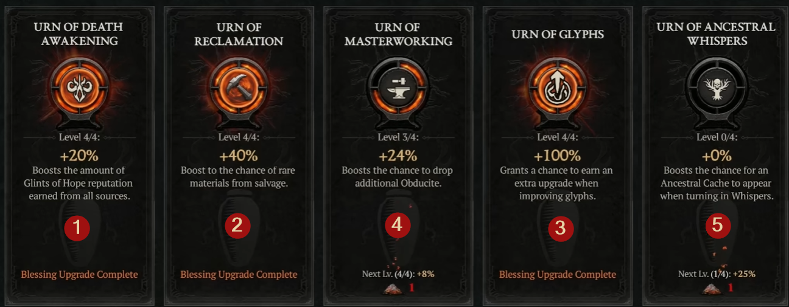

Diablo IV Activity Trees
Season 14

Helltide
Activity Tree
Infernal Hordes
Activity Tree
Lair Bosses
Activity Tree
Nightmare Dungeons
Activity Tree
The Pit
Activity Tree
The Undercity
Activity Tree
Tree of Whispers
Activity Tree
Use Mouse Wheel to scroll...
Season Blessings Priority

Torment Progression Guide
- Don't do this Mistake! Avoid rushing into Torment 1 at level 70. Instead, farm Helltides in Penitent difficulty using the Wraith and Rot node to secure 40–50 Paragon points and unlock your first Legendary Node for a big damage boost.
- First Steps in Torment 1: Prioritize shopping at vendors for 850 item power gear and buying aspect caches. Use the Horadric Cube to upgrade rare items to legendary and continue farming Helltides to reach 60–80 Paragon points.
- Torment 2 & Lair Boss: Only tackle Lair Bosses after reaching Torment 2 or 3. Focus on seasonal reputation and securing your first signature unique items.
- Torment 4 & Gems: Farm the Sears Reach dungeon to collect Grand Gems and set charms efficiently. Using markers for resets speeds this up dramatically.
- Torment 5–8 War Plans: Progress through the War Table activities, focusing on Greater Helltide Harvests. Farm Nightmare Dungeon Escalations for gold and materials.
- Defense: Use the Rahier mercenary with Bastion for damage reduction and barrier support. Prioritize armor, resistances, and maximum life.
- Gear Progression: Keep strong 850 item power items with ideal stats until ancestral upgrades appear. Reroll jewelry for critical multipliers.
- Torment Jumping: Only move into higher Torment tiers when your War Plan directs you through the Pit.
- Torment 10–12: Rebuild Paragon boards to activate all five glyphs and push them toward legendary status.
-
Loot Filter:
Use a loot filter from Torment 6 onward to hide
non-ancestral clutter while keeping rare talismans.
Copy Suggested Loot Filter for Import - Seasonal Blessing: Prioritize Urn of Death Awakening, then reclamation and glyph upgrades.
- Upgrade to Mythic: Save Superior Lair Boss Keys for higher-tier encounters instead of fragments. Farm Realm Walker events during Helltides.
- More Defense! Utilize runes, especially Earth Bulwark, for constant barrier uptime.